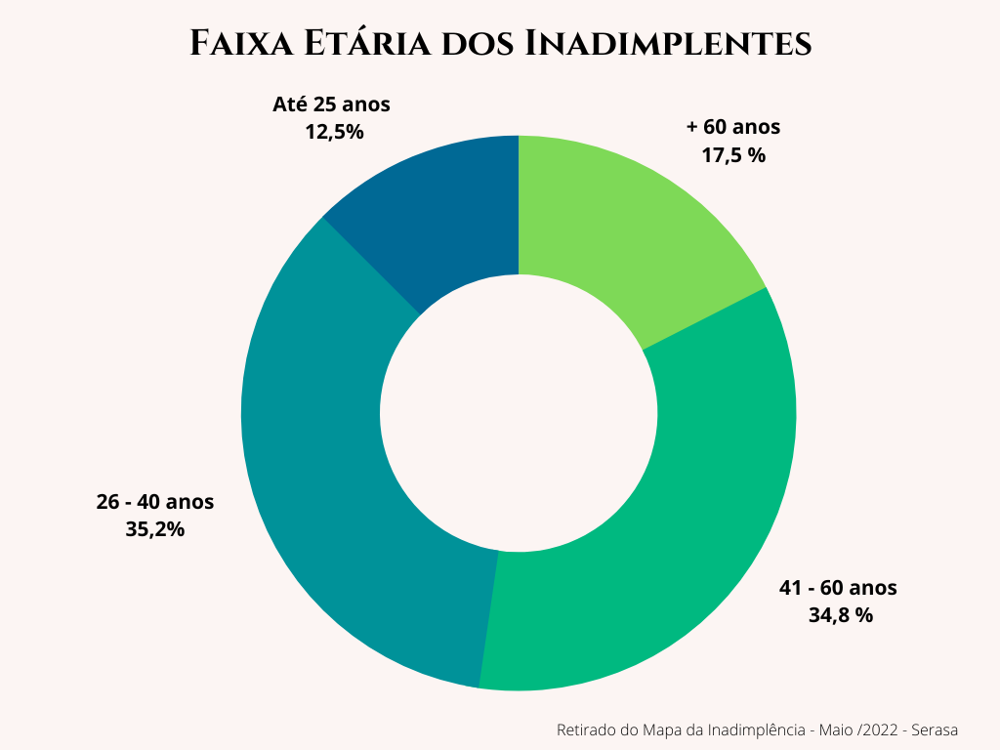
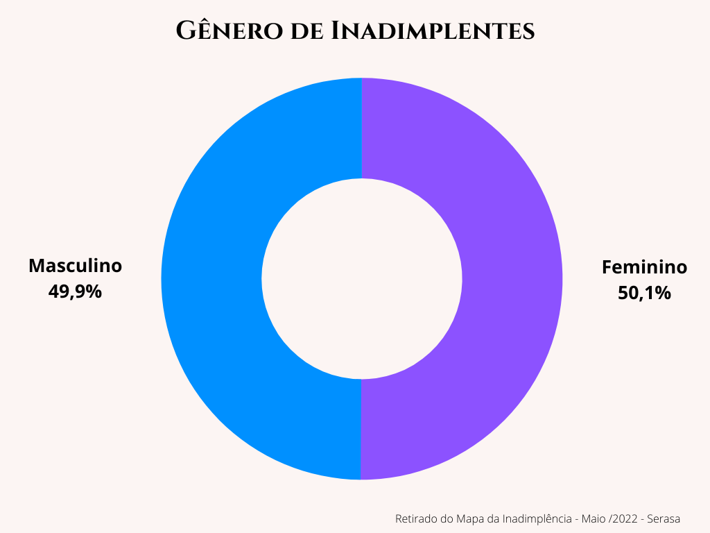
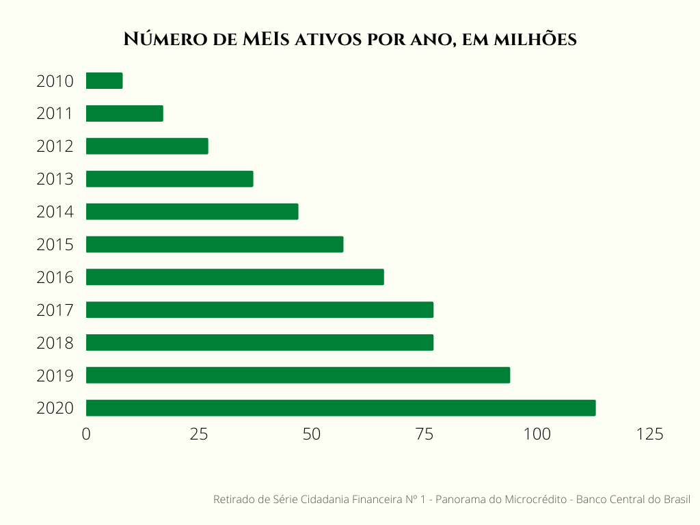
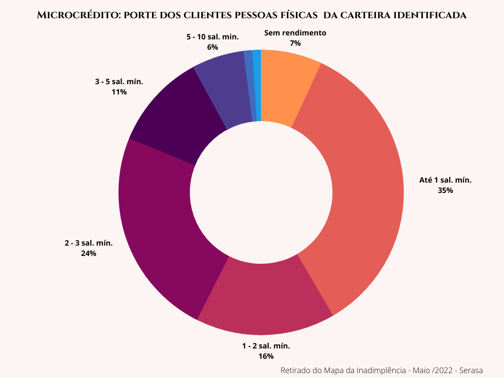
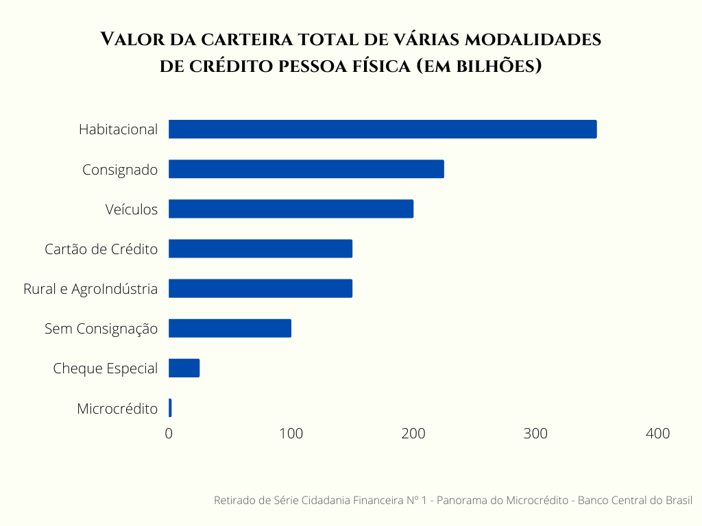

Seja um parceiro apoiando a mulher empreendedora!
Os levantamentos com base nos dados abaixo evidenciam a necessidade de atender e dar suporte a um mercado que cresce em demanda de crédito, mas não cresce em qualidade de carteira e volume financeiro:





Mas, porque apoiar a Academia do Crédito?
- Combinamos o melhor do business tradicional - dinamismo e eficiência -, com o melhor do setor público e filantrópico – consciência e solução de problemas sociais.
- Mexemos com mais dimensões do ser humano do que apenas fazer dinheiro. Ao contrario do business tradicional, o nosso negócio social não tem o objetivo de maximizar o valor para os acionistas.
- Temos um significado e propósito, sendo por isto altamente motivador e libertador de todo o potencial criativo humano, resultando em grandes inovações.
- O dinheiro doado para uma ONG ou instituição filantrópica não retorna. O dinheiro investido em negócio social é retornado e pode ser investido em um outro negócio social, depois em outro e em outro. O investimento em negócio social se recicla.
Entre em contato conosco, você, empresa ou pessoa física, que deseja apoiar o trabalho de mulheres empreendedoras. Sua colaboração será um empréstimo, que começará a ser devidamente ser devolvido pela participante da Academia do Crédito, em, no máximo, seis meses da liberação do crédito.